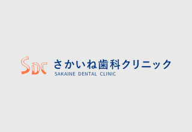
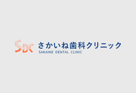
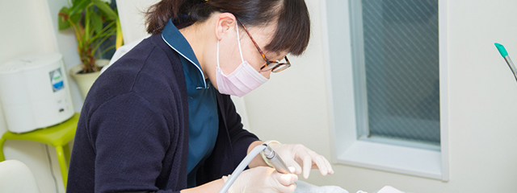
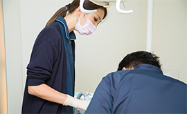
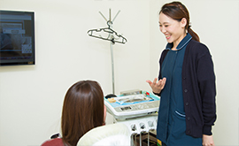
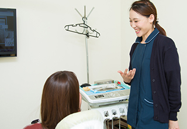

Staffスタッフ紹介・求人
スタッフ紹介
院長紹介
早川秀寛 院長
略歴

【略歴】
平成16年 日本大学松戸歯学部 卒業
平成25年 さかいね歯科クリニック 開業
【メッセージ】
私たちはいつも患者さんの目線に立ち、「ずっと通い続けたくなるような歯科医院」を目指しています。そのために誠意と思いやりをもって患者さんと接し、お口のお悩みについてじっくりヒアリング。患者さんの痛みや違和感をできるだけ早く取り除くことに努めています。
また、診療にはカウンセリングも大切です。お口の状態や治療方針などについても分かりやすく丁寧にご説明し、患者さんにしっかりご理解・ご納得いただいてから治療を進めていきます。
当院では歯科全般の治療メニューに対応していますので、お口まわりのお悩みがありましたら、お気軽にご相談ください。なお、当院は事前予約制です。待ち時間を少しでもなくしていくことで、患者さんの大切な時間を無駄にしないように心がけております。
スタッフ紹介

求人情報

千葉県南柏の歯医者「さかいね歯科クリニック」では、私たちと一緒に働いてくださるスタッフを募集中です。当院では、歯科全般の診療に対応しており、小さなお子さんからご年配の方まで、幅広い年齢層の方にご来院いただいています。
現在、地域に住むみなさんのお口の健康維持をサポートしてくださるスタッフ（歯科衛生士/科助手）を募集中しています。向上心のある方、自分の限界をつくらない方、大歓迎です。
当院が求める人材（歯科衛生士/歯科助手）


当院は現在、歯科衛生士さんと歯科助手さんを募集しています。経験の有無は問わず、ブランクがあっても構いません。スタッフが助け合う働きやすい環境で、みなさんのスキルアップをサポートします。
とくに、向上心がある方や自分の限界をつくらない方は歓迎です。分からないことは何でも、ドクターや先輩スタッフに積極的に質問してください。知識と経験を深め、自分の成長につなげることができるでしょう。私たちは、チャレンジ精神にあふれる方を本気で応援します。患者さんに対してもスタッフに対しても、誠意と思いやりを大切にしている安心の職場です。
院長からのメッセージ

私たちが大切にしているのは、誰もが安心できる歯科医院であること。それは、患者さんはもちろん働くスタッフにとっても同じです。スタッフ同士のコミュニケーションを大切に、それぞれが伸び伸びと仕事に取り組み、困ったときには助け合う環境を大切にしています。
歯科衛生士の方は、資格さえあれば特別な経験はなくても大丈夫です。ブランクがある方もお気軽にご応募ください。また、歯科助手を希望される方には特別な資格は不要ですが、保育士資格がある方を優遇いたします。未経験の方も安心して働ける環境を整えていますので、どうぞ安心してお問い合わせください。
募集要項
| 職種 |
【1】歯科衛生士 【2】歯科助手 |
|---|---|
| 対象となる方 |
【1】要歯科衛生士資格 【2】資格不要 |
| 勤務地 | 千葉県柏市酒井根2-1-1 |
| アクセス | 「増尾駅」徒歩18分 |
| 勤務時間 | 月曜・火曜・木曜・金曜 9：30～13：30 / 15：00～20：00 水曜 8：30～13：30 / 15：00～17：00 土曜 9：30～13：30 / 15：00～17：00 日曜 9：30～14：00 |
| 給与 |
【1】歯科衛生士 【2】歯科助手 |
| 待遇・福利厚生 |
|